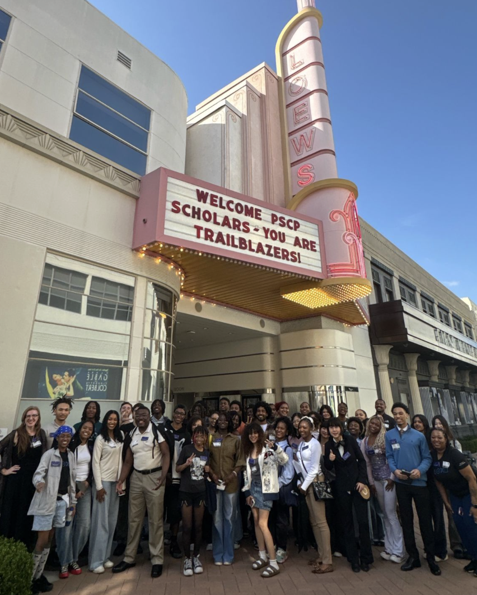
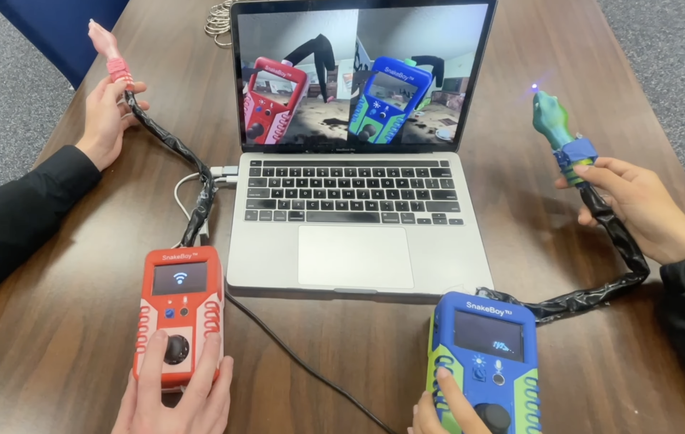

PlayStation Career Pathways Scholar
Gerald A. Lawson USC Games Fund
I was selected as a PlayStation Career Pathways Scholar through the Gerald A. Lawson USC Games Fund, supporting my continued education and development as a game programmer at USC. Through mentorship, professional development, and opportunities to experiment with gameplay, alternative controllers, hardware, and immersive experiences, the program has helped me grow as a programmer. It has been especially meaningful to receive this support through a fund honoring Gerald A. Lawson and his impact on the history of video games.
- Program: PlayStation Career Pathways
- Scholarship: Gerald A. Lawson USC Games Fund
- Focus: Game Jams, Industry Mentorship & Professional Development
PlayStation Ratchet It Up Game Jams
As part of PlayStation Career Pathways, I participated in the Ratchet It Up game jams, creating experimental games that combine physical hardware, alternative interaction, and LLM-driven systems.
I Told You So.
Winter 2025 - Honorable Mention
An experimental interaction game combining physical hardware, voice input, and an LLM-driven character system.

Kapture the Snake of '88
Spring 2026 - Honorable Mention
A hardware-driven investigation game where players use a custom
snake-camera controller to discover ghosts and interact with
LLM-driven characters.
View The Snake of '88 →

A hardware-driven investigation game where players use a custom snake-camera controller to discover ghosts and interact with LLM-driven characters.
View The Snake of '88 →
